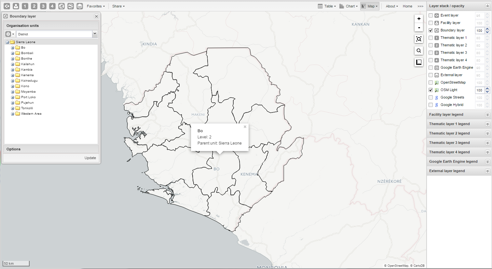

The boundary layer displays the borders and locations of your organisation units. This layer is useful if you are offline and don't have access to background maps.
Boundary layer
|  |
In the top left menu, click the boundary layer icon.
Click Edit layer.
In the Organisation units section, select one or several organisation units.
You can select the organisation units you want to show on the map by selecting a level and a parent. That means "show all organisations units at this level that are children of this parent".
In the Options section, select if you want to show labels and if so, how they look.
Click Update.
To locate an organisation unit on the map:
In the top menu, click the boundary layer icon.
Click Search.
The Organisation unit search dialog box opens.
In the text field, type the name of the organisation unit you are looking for or click a name in the list.
The organisation unit is highlighted in the map.
When there are visible organisation units on the map, you can easily navigate up and down in the hierarchy without using the level/parent user interface.
Right-click one of the organisation units.
Select Drill up or Drill down.
The drill down option is disabled if you are on the lowest level or if there are no coordinates available on the level below. The same applies when you are drilling up.